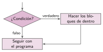
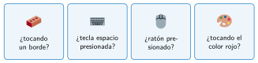

Decidir con si
🤔 Pienso5 min
Qué hago aquí: Piensa un momento y contesta con lo que ya sabes. No pasa nada si no lo sabes: es para empezar.
El gato anda por el escenario. ¿Qué debería hacer si toca la pared? ¿Y si no la toca?
📖 Leo y aprendo15 min
Qué hago aquí: Lee despacio, mira los dibujos y los ejemplos, y quédate con la idea clave del final.
Con un condicional, el programa decide.

El bloque si … entonces está en Control. Muchas condiciones salen de Sensores: ¿tocando…?, ¿tecla… presionada?

✏️ Hago25 min
Qué hago aquí: Haz las actividades en orden. Empieza siempre por las básicas.
Monta el programa de la contraseña. Pruébalo con puente y con casa. ¿Qué pasa en cada caso?
¿Qué dice el gato? edad vale 15. Programa: si edad > 13 entonces decir «Puedes ir en bici solo».
Al pulsar la barra espaciadora, el gato se mueve 10 pasos. Si toca el borde, dice «¡Ay!». Escribe los bloques.
✏️ Puedes responder escribiendo, con un dibujo o un esquema, o contándolo en voz alta.
Dibuja el diagrama de flujo del programa de la contraseña.
🚀 Amplío (si quieres saber más)
Qué hago aquí: ¿Has terminado? Lee la curiosidad o elige el reto. Es voluntario.
Pide un número y di si es par. Pista: es par si número mod 2 = 0.
✅ Compruebo5 min
Qué hago aquí: Contesta sin mirar la ficha y marca cómo lo llevas.